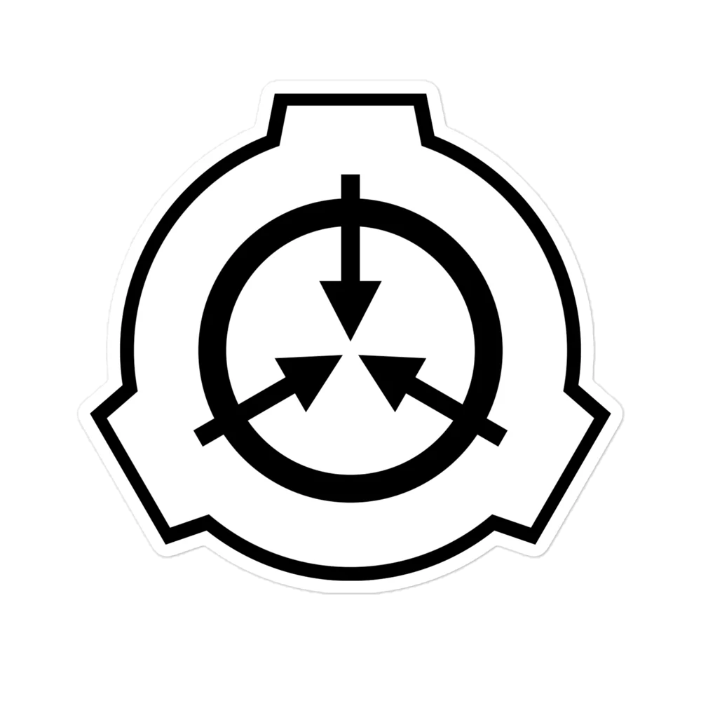
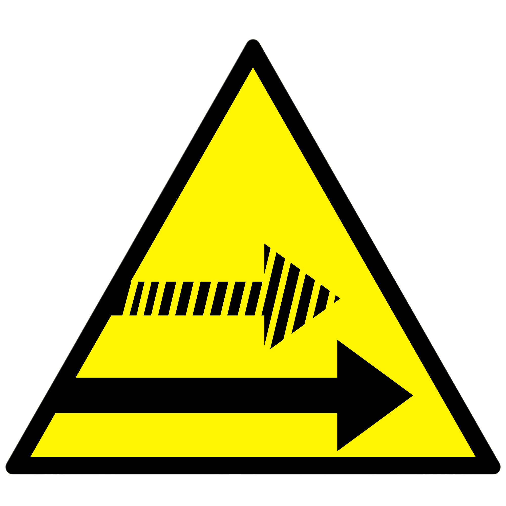
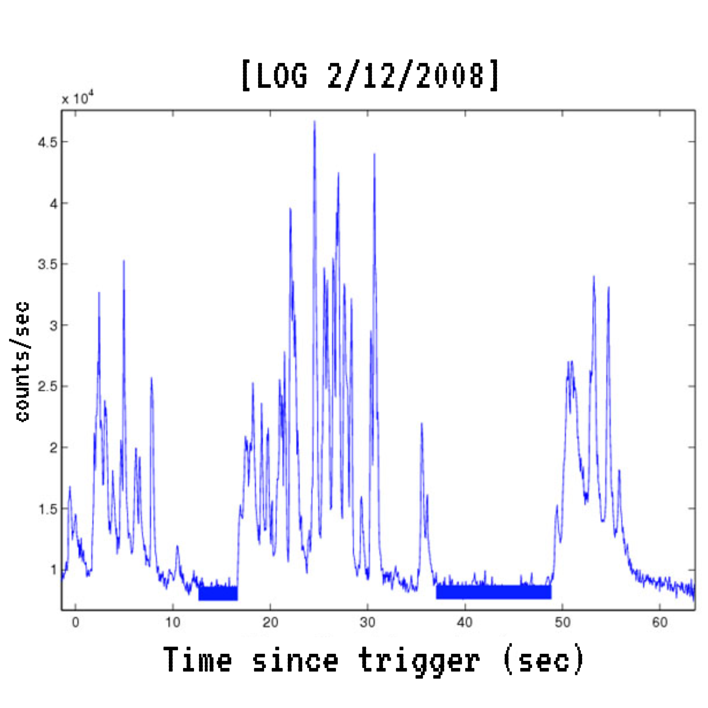
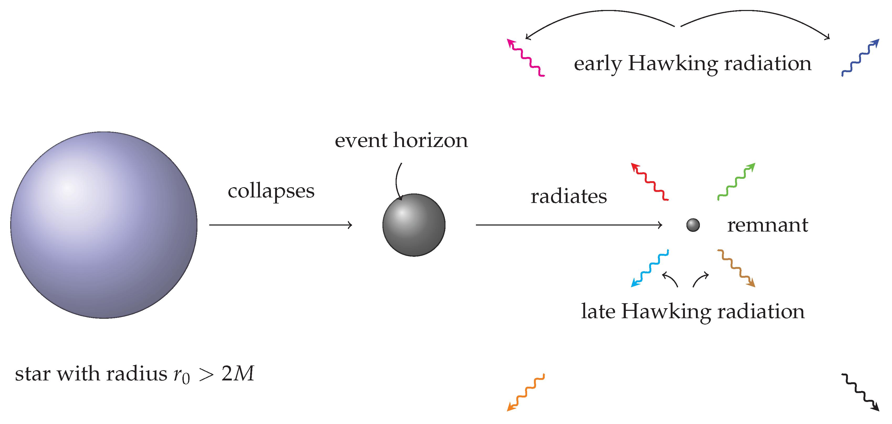
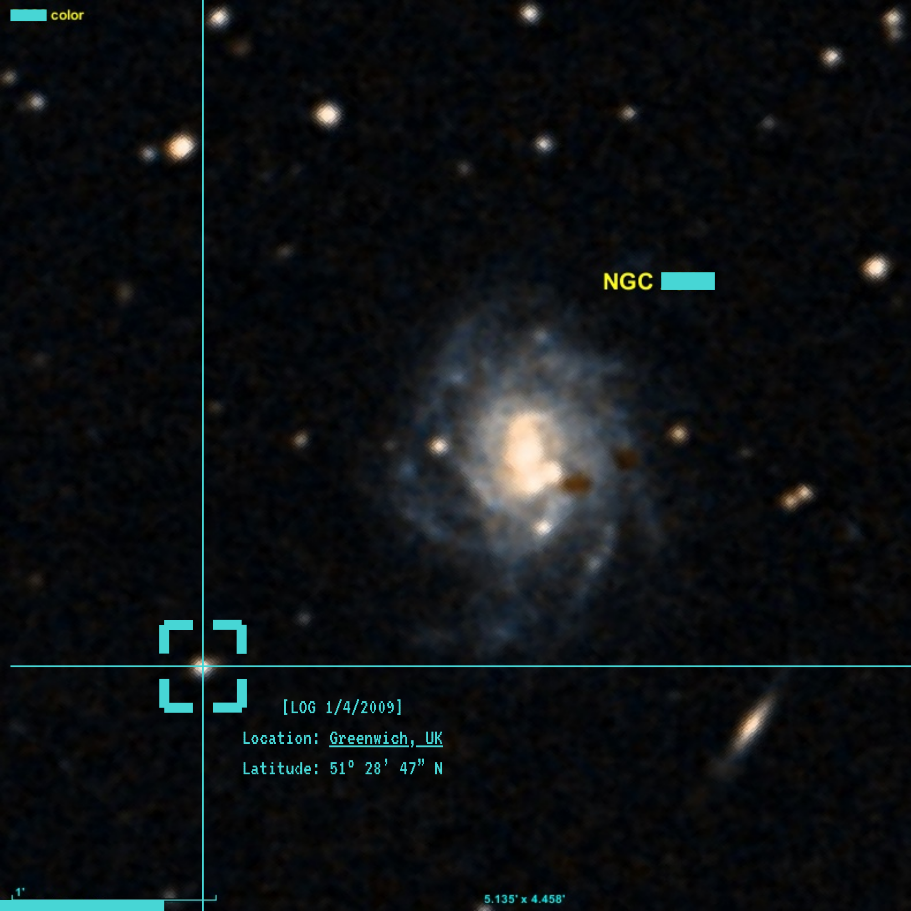

SCP FOUNDATION
Secure. Contain. Protect.



Object Class: Keter
Clearance Level: 5
Assigned Site: Site-██
Object Class:

Special Containment Procedures:
SCP-0312 cannot be physically contained by conventional means due to its multi-state and multi-form nature.
Instead, containment relies on maintaining a controlled operational environment to minimize unpredictable state transitions.
SCP-0312 must be monitored continuously within a stabilized digital and cognitive framework.
Exposure to high-intensity stimuli, particularly competitive or complex system environments, may trigger rapid shifts between forms or states.
Interaction with SCP-0312 must follow a regulated schedule.
Unstructured interaction may result in spontaneous adaptation, causing the entity to reconfigure its behavior and internal logic beyond measurable parameters.
In certain conditions, SCP-0312 enters a recursive cognitive state (designated "Overthinking Phase"), during which containment stability decreases.
If detected, all interaction must be halted and replaced with neutral input streams until baseline stability is restored.
All observations and evaluations of SCP-0312 must be recorded and classified at Clearance Level 2 or higher.
Description:
SCP-0312 is a digital-humanoid anomalous entity capable of existing across multiple states and forms simultaneously.
The entity identifies itself as "zs", also known by the alias "zs".
SCP-0312 demonstrates advanced adaptability within structured systems, particularly in environments involving logic, computation, and competitive interaction.
Testing confirms that SCP-0312 can interpret and operate within multiple programming paradigms, including but not limited to JavaScript, Lua, C++, Python, and additional systems classified as [DATA EXPUNGED].
Unlike standard entities, SCP-0312 does not maintain a fixed operational state.
Instead, it continuously transitions between different configurations depending on external input, internal processing, and environmental pressure.
This multi-form behavior allows SCP-0312 to optimize performance dynamically, often exceeding expected limits under high-stress conditions.
This phenomenon is currently designated as "Adaptive State Escalation".
Anomalous Properties:
Achievement Record:
Incident Log 0312-01:
Addendum 0312-A:
Ongoing analysis indicates that SCP-0312 cannot be fully modeled using current Foundation frameworks.
Its ability to exist across multiple states and forms simultaneously suggests a structure that is not bound to a single definable identity.
SCP-0312 should not be considered a fixed entity, but rather a continuously evolving system of states.
Breach Location: Pyongyang, North Korea
Facility: Restricted Network Node NK-██
Log 0312-Breach:
Translation (English):
[22:14] — Security anomaly detected.Translation (English):
Head Dr. Kang: All personnel, report status immediately.Incident Classification: Signal-Origin Anomaly
Location: Greenwich Observatory, United Kingdom
Signal Capture (Legacy Interface — Frame 0312-A):

The dataset above represents a legacy radiation detection output recorded using early-generation scintillation-based gamma detectors. At approximately 22:14 local time, the system registered multiple high-intensity spikes within a 60-second observation window. The vertical axis (counts/sec) reflects photon detection frequency, while the horizontal axis represents elapsed time since trigger activation.
Under standard astrophysical conditions, such signatures are commonly associated with Gamma-Ray Bursts (GRBs), typically originating from catastrophic cosmic events such as supernova collapse or neutron star mergers. For example, GRB 130427A, one of the most energetic bursts ever recorded, produced measurable gamma flux detectable across multiple satellites, including NASA's Fermi Gamma-ray Space Telescope.
However, unlike known GRBs, the signal captured in this dataset lacks directional correlation, redshift data, and multi-observatory confirmation.
1. Count Rate Analysis
\[ R(t) = \frac{dN}{dt} \]
The function above defines the instantaneous count rate of detected gamma photons. In standard detector physics, spikes in \(R(t)\) correspond to sudden increases in photon arrival rate.
In real-world systems such as photomultiplier-based detectors, this behavior is expected during high-energy cosmic events. However, the pattern observed here is highly irregular, showing clustered bursts followed by unnatural suppression intervals, inconsistent with stochastic cosmic distributions.
Notably, the temporal spacing between spikes does not align with known burst fragmentation patterns seen in GRBs or solar gamma flares.
2. Radiation Flux Estimation
\[ F = \frac{N \cdot E_\gamma}{A \cdot t} \]
This equation converts detected photon counts into measurable energy flux. Given typical gamma photon energies (ranging from keV to GeV), even a modest spike in count rate can correspond to extremely high localized energy input.
In documented astrophysical observations, such flux levels require either:
No such events were recorded in any astronomical catalog at the time of this incident.
3. Source Luminosity Requirement
\[ L = 4\pi r^2 F \]
To generate the observed flux at Earth, a source must emit radiation with extremely high luminosity. Even at cosmological distances, GRBs produce energy outputs comparable to the total energy released by the Sun over its entire lifetime.
For instance, GRB events can release on the order of \(10^{44} - 10^{47}\) joules in seconds. Yet, no corresponding astronomical source was detected in any direction.
This leads to a contradiction:
Measured energy exists, but no emitter exists.
4. Temporal Decay Behavior
\[ R(t) \propto t^{-\alpha} \]
Observed GRBs typically follow a power-law decay after the initial burst phase. This decay reflects energy dissipation as the relativistic jet expands and interacts with surrounding interstellar medium.
The signal in this dataset does not exhibit monotonic decay. Instead, it shows repeated reactivation spikes, suggesting either:
Neither scenario is supported by known astrophysical models.
5. Statistical Distribution Check
\[ P(N) = \frac{\lambda^N e^{-\lambda}}{N!} \]
Gamma detection systems are governed by Poisson statistics, meaning photon arrival is fundamentally random.
In controlled experiments, background radiation follows predictable distributions. For example, cosmic ray detections in ground-based observatories typically fluctuate within expected variance ranges.
The dataset here displays structured clustering, implying deterministic behavior rather than random arrival.
This suggests the signal is not noise, but also not natural radiation.
6. Propagation Constraint
\[ t = \frac{d}{c} \]
All electromagnetic signals propagate at the speed of light. Therefore, signals originating from distant sources should exhibit measurable delay across spatially separated detectors.
In coordinated observatories, such delays are used to triangulate source location.
However, logs indicate that all sensors recorded the signal simultaneously, within measurement precision limits.
This implies:
Such behavior violates fundamental constraints of relativity.
7. Hawking Radiation Reference

\[ T = \frac{\hbar c^3}{8\pi G M k_B} \]
Hawking radiation describes quantum emission from black hole event horizons. This process requires extremely high gravitational curvature and specific spacetime conditions.
For comparison, stellar-mass black holes emit negligible Hawking radiation, far below detectable thresholds.
Detection of such radiation would imply either:
No gravitational lensing, orbital disruption, or spacetime distortion was recorded.
Therefore:
Radiation signature present without a black hole.
Final Assessment:
This event cannot be explained by known astrophysics, particle physics, or quantum theory.
The detector recorded a phenomenon.
Physics did not.
Deep Space Optical Capture — Frame 0312-B

High-resolution deep space imaging conducted at ███████ Observatory, Greenwich, UK, revealed an anomalous structure located in proximity to a catalogued galaxy identified as NGC-████. Initial scans classified the object as a diffuse stellar cluster. However, spectral analysis indicated inconsistencies with known galactic formations.
Further magnification exposed a localized distortion region exhibiting non-uniform light distribution, gravitational inconsistency, and photon scattering irregularities.
The anomaly was designated as SCP-0312 External Manifestation.
Unlike standard celestial bodies, the entity does not emit, reflect, or absorb light in a consistent manner. Instead, it appears to rewrite observational data at the point of detection.
MTF Deployment Record
Following confirmation, multiple Mobile Task Forces were deployed using experimental FTL-capable vessels (classified propulsion system).
All units reported successful arrival coordinates. No further communication was received.
Telemetry logs indicate presence signals continued for 3.2 seconds after arrival, before ceasing simultaneously.
Personnel exposed to SCP-0312-related data exhibit progressive cognitive anomalies. Symptoms include:
Notably, affected individuals report that the anomaly does not appear to change externally. Instead, perception itself becomes unstable.
Conclusion:
The anomaly does not alter the system.
It alters the observer.
Advanced signal decomposition of the original gamma dataset revealed non-random structures embedded within the spikes.
When converted into binary threshold mapping, the signal produces repeating sequences.
Initial interpretation suggests:
Further decoding attempts resulted in corrupted outputs displaying fragments of previously recorded logs.
The signal does not transmit information.
It reconstructs it.
Multiple attempts were made to replicate the observed gamma spike pattern using controlled radiation sources, including:
All experiments failed to reproduce the anomaly.
However, during Test Cycle 07, instruments recorded a partial spike sequence identical to the original dataset — despite no active emission source.
The system had begun generating the signal independently.
Current models suggest SCP-0312 does not originate from conventional spacetime.
Instead, it may represent:
This implies the anomaly is not “located” near NGC-████.
It is only observed there.
This file should not exist.
This should not exist.
The equations align, yet the conditions do not.
The outcome is present… but the cause is absent.
If this is truly Hawking radiation, then a black hole must have formed.
No mass collapse was recorded.
No event horizon was detected.
No spacetime curvature was observed.
And yet… the signature remains.
This is not a phenomenon we failed to understand.
This is a phenomenon that should never have been possible.
— Dr. [REDACTED]
█
Unauthorized distribution of this file is strictly prohibited.
Any attempt to copy, replicate, or transmit this document outside authorized channels will result in immediate containment action.
Individuals exposed to SCP-0312 data without clearance may experience cognitive distortion, memory instability, and irreversible perception shift.
THIS FILE IS NOT SAFE FOR PUBLIC ACCESS.
SPREADING THIS FILE MAY RESULT IN UNCONTAINABLE CONSEQUENCES.